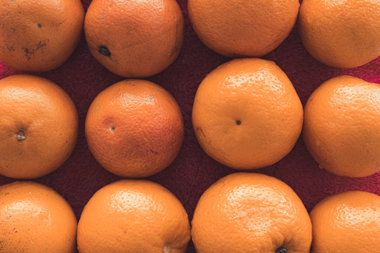

our Fruit Collection
Explore our selection of fresh and delisious fruits .browse through our collevtion and find your favorite fruit
fruit1:juicy apples

description:Our juicy apples are fresh and crispy perfect or baked.
- Fresh for snacks and desserts
- ideal for snscks
- available in various varieties
Fruit 2:sweet Oranges

description:Our sweet oranges are packed with flavour and vitamin ffor smoothies or baking
- rich in vitamin c
- sweet and juicy
- perfect for fresh juice
Fruit 3:ripe bananas

description:Our ripe bananas are soift and sweet ,ideal for smoothies or baking.
- soft and sweet
- great smoothies
- perfect baking
Fruit 4:fresh strawberies
description:these fresh strawberries are juicy and sweet ,prfect for desserts or a snck
- juicy and fruty
- great for desser
- perfect baking
Fruit 5:Tangy lemons

description:tangy lemons perfect for adding flavour to your dishes or backing lemmonade
- perfect for flavoring dishes
- great for lamonade
- fresh and tangy
Fruit 6:Tangy lemons
description:tangy lemons perfect for adding flavour to your dishes or backing lemmonade
- perfect for flavoring dishes
- great for lamonade
- great for topping
Fruit 7:exotic pineapples
 description:exotic pineapples with sweet and tangy flavour for tropical recipies.
description:exotic pineapples with sweet and tangy flavour for tropical recipies.
- perfect for flavoring dishes
- great for lamonade
- fresh and extotic
contact us
if you have any questions about our fruits ,please feel free to email us